БИО-ХИМ
Сәйкестендіріңіз:
1.Қарқаралы; 2.Верный; 3.Семей; 4.Павлодар;
А)Қарқара; В) Шар; С)Тайыншакөл; D) Қоянды-Ботов
1-А; 2-С; 3-D; 4-В
1-D; 2-А; 3-B; 4-С
1-В; 2-А; 3-С; 4-D
1-C; 2-B; 3-A; 4-D
Қазақ АКСР құрылған жыл
1921ж 6 тамыз
1920ж 26 тамыз
1930ж 30 тамыз
1925 6 маусым
Шыңғыс ханды қолдаған Керейт ханы
Торы
Даян
Күшлік
Құршақұз
«Қазақстан – 2030» даму стратегиясының 3-ші басты бағыты
Адамгершілік пен құқық
Сыртқы сауда
Экономикалық өрлеу
Балаларды қорғау
Сақ-Тиграхаудалар өмір сүрген өңір:
Батыс Қазақстанда
Солтүстік Қазақстан мен Сарыарқа етегінде
Алтай тауының етегінде
Жетісу мен Сырдарияның орта ағысы (Тянь-Шань)
Әскери жетістіктері үшін және адал еңбегі үшін берілетін, бірақ мұра болып қалмайтын мүлік түрі
Құшыр
Сойырғал
Інжулік жерлер
Сый ақы
Түргеш қағанатының жазғы ордасы
Ескі Гузия
Янгикент
Суяб
Күңгіт
1943 жылы Алматыда жарық көрген «Қазақ КСР тарихы» еңбегінің авторы:
С.Асфендияров
Е.Бекмаханов
І.Есенберлин
Қ.Жұмаділов
1992 ж Түрксойдың негізі қаланған қала?
Ташкент
Астана
Ыстамбұл
Алматы
Ұлы Отан соғысынан кейінгі жылдары «Шопан әні», «Сұхбат» сияқты суреттерді дүниеге әкелген жас суретші:
М.Төлебаев
Қ.Телжанов
Ә. Қастеев
М.Кенбаев
Тарас Шавченконың құрметіне берілген Шевченко қаласының қазіргі атауы?
Қызылорда
Атырау
Ақтау
Маңғыстау
Фашисттік Германияға қарсы соғыс жеңісінің 20 жылдығына байланысты 1965 жылы 8 мамырда Ленинград қаласына берілген атақ
"Берік қамал"
"Қаһарман қала"
"Батыр қала"
"Жауынгер қала"
Бөгенбай батырдың өлімін Абылай ханға естірткен жырау?
Сыпыра жырау
Бұқар жырау
Ақтамберді жырау
Үмбетей жырау
XIX ғасырдағы келеңсіздікті ашып жазған Мұрат Мөңкеұлының шығармасы
Байлар пара жемеңдер
Үш анық
Зар заман
Үш Қиян
Қазақстан алтын және алмаз қоры құрылған жыл:
1991ж
1992ж
1995ж
1985ж
М.Әйтпенов негізін қалаған ұйым:
Алаш
Үш жүз
Қосшы
Жарлы
1982ж КОКП ОК пленумында қабылданған бағдарлама:
Кәсіпорындарды жекешелендіру
Кеңшарлар туралы бағдарлама
Тілдер туралы
Азық түлік бағдарламасы
Патша үкіметң Орта жүз бен Кіші жүзде хандық билікті жою үшін жарғылар шығарды
1786-1791жж
1886-1891жж
1867-1868жж
1822-1824жж
С.Асфендияров бітірген оқу орны
Петербург инженерия институты
Петербург заң факультеті
Петербург орман институты
Петербург әскери медицина институты
2 Мемлекеттік Думада Семей облысынан сайланған депутат:
Б.Қаратаев
Ә.Бөкейханов
Т.Нұрекенұлы
Ш.Қосшығұлұлы
1-мәтін
Ала жіптей шұбалған жолмен қорапты машина келеді. Өршеленіп өрге ұмтылады. Белестен соң белес артта қалып жатыр. Жатаған дөңес, жасыл бел қалды. Көбігін көкке шашқан асау өзен қалды.
Кабинада екеу еді. Ересегі қаршығадай құнтиған қағілез адам – Бөрібай. Қасындағысы – кенже ұлы Бекен. Құлағы қалқиған, сары бала. Биыл төртінші сыныпты бітіріп, жайлаудағы нағашысына келе жатыр. Аузы аңқиып, жол қызығын баққанына екі сағаттан асқан. Әлі жалығар емес. Ол андағайлап келіп тұра қалғандай болатын кереге тастардан да, қалың нудың мүлгіген тыныштығынан да, бұтадан бұтаға, гүлден гүлге қонып, әудем жерге дейін шығарып салатын сары шымшықтың ықыласынан да әлдебір cыp түйіп, ой аңғарғандай.
1. Үзіндідегі жыл мезгілі
Жаз
Күз
Көктем
Қыс
1-мәтін
Ала жіптей шұбалған жолмен қорапты машина келеді. Өршеленіп өрге ұмтылады. Белестен соң белес артта қалып жатыр. Жатаған дөңес, жасыл бел қалды. Көбігін көкке шашқан асау өзен қалды.
Кабинада екеу еді. Ересегі қаршығадай құнтиған қағілез адам – Бөрібай. Қасындағысы – кенже ұлы Бекен. Құлағы қалқиған, сары бала. Биыл төртінші сыныпты бітіріп, жайлаудағы нағашысына келе жатыр. Аузы аңқиып, жол қызығын баққанына екі сағаттан асқан. Әлі жалығар емес. Ол андағайлап келіп тұра қалғандай болатын кереге тастардан да, қалың нудың мүлгіген тыныштығынан да, бұтадан бұтаға, гүлден гүлге қонып, әудем жерге дейін шығарып салатын сары шымшықтың ықыласынан да әлдебір cыp түйіп, ой аңғарғандай.
2. Жол бойы Бекенді әсеріге бөлеген
Жолдың тым ұзақтығы
Табиғат тамашасы
Нағашысына барамын деген
Машинаға алғаш мінуі
2-мәтін
«Отырар сазы» қазақ өнері аспанында
1. Халқымыздың асыл перзенті Нұрғиса Тілендиев «Отырар сазы» деп аталатын қайталануы, теңесері сирек тұнық қайнардың көзін ашты. «Менің арманым – өмірімізден де, әдебиетімізден де бөлшектенбеген тұтас халқымды көру және оның өткенін де, бүгінін де, ертеңін де айқын елестету. Осы ізгі ниетпен «Отырар сазын» құрдым. Халқымның жанын ашуға талшындым», – дейді Нұрағаң бір сөзінде.
2. Нұрағаң бұл игілікті істі алғашында небәрі алты музыкант, екі әншімен жүзеге асырды. Алғашқы концертте ансамбль мүшелерінің саны он жеті болды. 1985 жылы Москваның Чайковский атындағы өнер сарайында өткен ойын - сауықта «Отырар сазының» даңқы шырқады, ол оркестр дәрежесіне бір-ақ көтерілді. Мүшелер саны алпыстан асқан «Отырар сазы» 1985 жылы Бүкілодақтық жастар фестивалінде лауреат атанды. Осы жылы ол Бүкілодақтық Ленин комсомолының сыйлығын иеленді. Мұның алдында «Отырар сазына» Қазақ КСР мемлекеттік сыйлығы берілген. Қазаққа тән музыка аспаптарының көнелері мен жаңаларын үйлесімді түрде сахнада «өз тілімен» сөйлеткен «Отырар сазының» атақ-даңқы дүние жүзіне танылды.
3. Нұрғиса оркестрді мүлде беймәлім және ұмыт қалған ұлттық музыка аспаптарымен толықтыруға баса назар аударды. Сол себепті де оның үні сан алуан. «Отырар сазының» репертуары аса бай. Онда Алтайдан Атырауға дейінгі халық ән-күйлері мен саз-толғаулары мол. «Отырар сазыңда» ежелгі ата жұртымыздың, қазақ елінің мақтанышына айналған Нұрғисаның авторлық әндері мен күйлері де жиі естіледі.
3. Нұрғиса Тілендиевтің «Отырар сазын» құрудағы мақсаты
Қазақ халқының бар болмысын паш ету
Жастар фестиваліне қатысу
Ленин комсомолының сыйлығын алу
Халқының мақтанышына айналу
2-мәтін
«Отырар сазы» қазақ өнері аспанында
1. Халқымыздың асыл перзенті Нұрғиса Тілендиев «Отырар сазы» деп аталатын қайталануы, теңесері сирек тұнық қайнардың көзін ашты. «Менің арманым – өмірімізден де, әдебиетімізден де бөлшектенбеген тұтас халқымды көру және оның өткенін де, бүгінін де, ертеңін де айқын елестету. Осы ізгі ниетпен «Отырар сазын» құрдым. Халқымның жанын ашуға талшындым», – дейді Нұрағаң бір сөзінде.
2. Нұрағаң бұл игілікті істі алғашында небәрі алты музыкант, екі әншімен жүзеге асырды. Алғашқы концертте ансамбль мүшелерінің саны он жеті болды. 1985 жылы Москваның Чайковский атындағы өнер сарайында өткен ойын - сауықта «Отырар сазының» даңқы шырқады, ол оркестр дәрежесіне бір-ақ көтерілді. Мүшелер саны алпыстан асқан «Отырар сазы» 1985 жылы Бүкілодақтық жастар фестивалінде лауреат атанды. Осы жылы ол Бүкілодақтық Ленин комсомолының сыйлығын иеленді. Мұның алдында «Отырар сазына» Қазақ КСР мемлекеттік сыйлығы берілген. Қазаққа тән музыка аспаптарының көнелері мен жаңаларын үйлесімді түрде сахнада «өз тілімен» сөйлеткен «Отырар сазының» атақ-даңқы дүние жүзіне танылды.
3. Нұрғиса оркестрді мүлде беймәлім және ұмыт қалған ұлттық музыка аспаптарымен толықтыруға баса назар аударды. Сол себепті де оның үні сан алуан. «Отырар сазының» репертуары аса бай. Онда Алтайдан Атырауға дейінгі халық ән-күйлері мен саз-толғаулары мол. «Отырар сазыңда» ежелгі ата жұртымыздың, қазақ елінің мақтанышына айналған Нұрғисаның авторлық әндері мен күйлері де жиі естіледі.
4. Ең алғаш «Отырар сазының» қанша мүшесі болды?
20
8
25
60
2-мәтін
«Отырар сазы» қазақ өнері аспанында
1. Халқымыздың асыл перзенті Нұрғиса Тілендиев «Отырар сазы» деп аталатын қайталануы, теңесері сирек тұнық қайнардың көзін ашты. «Менің арманым – өмірімізден де, әдебиетімізден де бөлшектенбеген тұтас халқымды көру және оның өткенін де, бүгінін де, ертеңін де айқын елестету. Осы ізгі ниетпен «Отырар сазын» құрдым. Халқымның жанын ашуға талшындым», – дейді Нұрағаң бір сөзінде.
2. Нұрағаң бұл игілікті істі алғашында небәрі алты музыкант, екі әншімен жүзеге асырды. Алғашқы концертте ансамбль мүшелерінің саны он жеті болды. 1985 жылы Москваның Чайковский атындағы өнер сарайында өткен ойын - сауықта «Отырар сазының» даңқы шырқады, ол оркестр дәрежесіне бір-ақ көтерілді. Мүшелер саны алпыстан асқан «Отырар сазы» 1985 жылы Бүкілодақтық жастар фестивалінде лауреат атанды. Осы жылы ол Бүкілодақтық Ленин комсомолының сыйлығын иеленді. Мұның алдында «Отырар сазына» Қазақ КСР мемлекеттік сыйлығы берілген. Қазаққа тән музыка аспаптарының көнелері мен жаңаларын үйлесімді түрде сахнада «өз тілімен» сөйлеткен «Отырар сазының» атақ-даңқы дүние жүзіне танылды.
3. Нұрғиса оркестрді мүлде беймәлім және ұмыт қалған ұлттық музыка аспаптарымен толықтыруға баса назар аударды. Сол себепті де оның үні сан алуан. «Отырар сазының» репертуары аса бай. Онда Алтайдан Атырауға дейінгі халық ән-күйлері мен саз-толғаулары мол. «Отырар сазыңда» ежелгі ата жұртымыздың, қазақ елінің мақтанышына айналған Нұрғисаның авторлық әндері мен күйлері де жиі естіледі.
5. «Отырар сазының» басты ерекшелігі
Ән-күйлері мол
Ежелгі ұлттық аспаптар бар.
Атақ-даңқы дүние жүзіне танылды.
Репертуарлары өте бай.
2-мәтін
«Отырар сазы» қазақ өнері аспанында
1. Халқымыздың асыл перзенті Нұрғиса Тілендиев «Отырар сазы» деп аталатын қайталануы, теңесері сирек тұнық қайнардың көзін ашты. «Менің арманым – өмірімізден де, әдебиетімізден де бөлшектенбеген тұтас халқымды көру және оның өткенін де, бүгінін де, ертеңін де айқын елестету. Осы ізгі ниетпен «Отырар сазын» құрдым. Халқымның жанын ашуға талшындым», – дейді Нұрағаң бір сөзінде.
2. Нұрағаң бұл игілікті істі алғашында небәрі алты музыкант, екі әншімен жүзеге асырды. Алғашқы концертте ансамбль мүшелерінің саны он жеті болды. 1985 жылы Москваның Чайковский атындағы өнер сарайында өткен ойын - сауықта «Отырар сазының» даңқы шырқады, ол оркестр дәрежесіне бір-ақ көтерілді. Мүшелер саны алпыстан асқан «Отырар сазы» 1985 жылы Бүкілодақтық жастар фестивалінде лауреат атанды. Осы жылы ол Бүкілодақтық Ленин комсомолының сыйлығын иеленді. Мұның алдында «Отырар сазына» Қазақ КСР мемлекеттік сыйлығы берілген. Қазаққа тән музыка аспаптарының көнелері мен жаңаларын үйлесімді түрде сахнада «өз тілімен» сөйлеткен «Отырар сазының» атақ-даңқы дүние жүзіне танылды.
3. Нұрғиса оркестрді мүлде беймәлім және ұмыт қалған ұлттық музыка аспаптарымен толықтыруға баса назар аударды. Сол себепті де оның үні сан алуан. «Отырар сазының» репертуары аса бай. Онда Алтайдан Атырауға дейінгі халық ән-күйлері мен саз-толғаулары мол. «Отырар сазыңда» ежелгі ата жұртымыздың, қазақ елінің мақтанышына айналған Нұрғисаның авторлық әндері мен күйлері де жиі естіледі.
6. Екінші бөлімнің бірінші бөлімге қатысы
Ойды қорытындылайды
Ойды байланыстырады
Ойды пайымдайды.
Ойды дамытады
3-мәтін
1. «Көптік – құдіреттіліктің бір белгісі» дегенді айтқан қазақ қандай шаруаға болса да, жұмыла қимылдаудың артықшылығын пайымдаған. Сондай істері арқылы бауырмалдығын, ынтымағын, бір-біріне ізет-құрметін танытып отырған. Ел ішіндегі күш-қайраты жоқ, жалғыз ілікті қарт адамдарға қамқорлық жасау арнайы ұйымдастырылады. Кеудесінде жаны бар қазақ қанша қалжыраған халге түссе де, ары мен намысын жоғары ұстайды. «Жаным – арымның садағасы» дейтіні содан. Қандай қамқорлық жасалса да, ол сол адамның намысына тимеуі керек. Барлық шара сол негізге құрылады. Сондай шараның бір түрі – асар. Жалғыз басты қарт адамдардың бітпей жатқан жұмысына ауылдың жігіт-желеңдері жабыла қолқабыс беріп, тез тындырып тастау әдісін қазақтар «асар» деп атайды. Мұның өмірлік, қоғамдық және әлеуметтік мәні бар. Жұмыс күші кем, ісі бітпей жатқан адамдар осы шараның арқасында шаруасын тындырып алады.
2. Асардың да ел қолдаған жөн-жосығы бар. Кез келген кісі асар салмайды. Ел назарын аударған, жұрт қолдаған сипаты сақталады. Күші мығым, қайратты жігіттердің құрбы-құрдастарын жәрдемдесуге шақыруы асарға жатпайды. Асарды үйінде қайратты кісісі жоқ не науқасқа шалдығып қалған, шаруасының науқаны өтіп бара жатқан адамдар жасайды. Ағайын-жұрты мұны қостайды. Сөйтсе де асар салушы жиналған қауымды қанағаттандыратындай дәрежеде дайындалады. Жұмыс істеушілердің қажетіне керектіні толық әзірлейді.
3. Асар – қазақ арасында біріне-бірі көмек көрсететін ымыралы салт. Ағайынын разы ету үшін қандай қиындық болса да, көптің біріккен күшімен қатар тұрып жеңудің амалы, нақты шара.
7. Берілген мақал-мәтелдердің қайсысы мәтіннің 1-бөлімінің мағынасын ашып тұр?
Қайраты жоқ кісінің берекеті жок ісінің.
Қолы қимылдағанның аузы қимылдайды.
Көп түкірсе – көл.
Барымен базар, жоқты қайдан табар?
3-мәтін
1. «Көптік – құдіреттіліктің бір белгісі» дегенді айтқан қазақ қандай шаруаға болса да, жұмыла қимылдаудың артықшылығын пайымдаған. Сондай істері арқылы бауырмалдығын, ынтымағын, бір-біріне ізет-құрметін танытып отырған. Ел ішіндегі күш-қайраты жоқ, жалғыз ілікті қарт адамдарға қамқорлық жасау арнайы ұйымдастырылады. Кеудесінде жаны бар қазақ қанша қалжыраған халге түссе де, ары мен намысын жоғары ұстайды. «Жаным – арымның садағасы» дейтіні содан. Қандай қамқорлық жасалса да, ол сол адамның намысына тимеуі керек. Барлық шара сол негізге құрылады. Сондай шараның бір түрі – асар. Жалғыз басты қарт адамдардың бітпей жатқан жұмысына ауылдың жігіт-желеңдері жабыла қолқабыс беріп, тез тындырып тастау әдісін қазақтар «асар» деп атайды. Мұның өмірлік, қоғамдық және әлеуметтік мәні бар. Жұмыс күші кем, ісі бітпей жатқан адамдар осы шараның арқасында шаруасын тындырып алады.
2. Асардың да ел қолдаған жөн-жосығы бар. Кез келген кісі асар салмайды. Ел назарын аударған, жұрт қолдаған сипаты сақталады. Күші мығым, қайратты жігіттердің құрбы-құрдастарын жәрдемдесуге шақыруы асарға жатпайды. Асарды үйінде қайратты кісісі жоқ не науқасқа шалдығып қалған, шаруасының науқаны өтіп бара жатқан адамдар жасайды. Ағайын-жұрты мұны қостайды. Сөйтсе де асар салушы жиналған қауымды қанағаттандыратындай дәрежеде дайындалады. Жұмыс істеушілердің қажетіне керектіні толық әзірлейді.
3. Асар – қазақ арасында біріне-бірі көмек көрсететін ымыралы салт. Ағайынын разы ету үшін қандай қиындық болса да, көптің біріккен күшімен қатар тұрып жеңудің амалы, нақты шара.
8. Мәтінде қозғалатын мәселе
Қамқорлық
Аяушылық
Шыдамдылық
Жолдастық
3-мәтін
1. «Көптік – құдіреттіліктің бір белгісі» дегенді айтқан қазақ қандай шаруаға болса да, жұмыла қимылдаудың артықшылығын пайымдаған. Сондай істері арқылы бауырмалдығын, ынтымағын, бір-біріне ізет-құрметін танытып отырған. Ел ішіндегі күш-қайраты жоқ, жалғыз ілікті қарт адамдарға қамқорлық жасау арнайы ұйымдастырылады. Кеудесінде жаны бар қазақ қанша қалжыраған халге түссе де, ары мен намысын жоғары ұстайды. «Жаным – арымның садағасы» дейтіні содан. Қандай қамқорлық жасалса да, ол сол адамның намысына тимеуі керек. Барлық шара сол негізге құрылады. Сондай шараның бір түрі – асар. Жалғыз басты қарт адамдардың бітпей жатқан жұмысына ауылдың жігіт-желеңдері жабыла қолқабыс беріп, тез тындырып тастау әдісін қазақтар «асар» деп атайды. Мұның өмірлік, қоғамдық және әлеуметтік мәні бар. Жұмыс күші кем, ісі бітпей жатқан адамдар осы шараның арқасында шаруасын тындырып алады.
2. Асардың да ел қолдаған жөн-жосығы бар. Кез келген кісі асар салмайды. Ел назарын аударған, жұрт қолдаған сипаты сақталады. Күші мығым, қайратты жігіттердің құрбы-құрдастарын жәрдемдесуге шақыруы асарға жатпайды. Асарды үйінде қайратты кісісі жоқ не науқасқа шалдығып қалған, шаруасының науқаны өтіп бара жатқан адамдар жасайды. Ағайын-жұрты мұны қостайды. Сөйтсе де асар салушы жиналған қауымды қанағаттандыратындай дәрежеде дайындалады. Жұмыс істеушілердің қажетіне керектіні толық әзірлейді.
3. Асар – қазақ арасында біріне-бірі көмек көрсететін ымыралы салт. Ағайынын разы ету үшін қандай қиындық болса да, көптің біріккен күшімен қатар тұрып жеңудің амалы, нақты шара.
9. Мәтін бойынша асар сала алмайтын адамдар
Үйінде ер адамы жоқ қауқарсыз жандар
Үйінде қайратты адамы жоқ, балалы-шағалы әйелдер
Жалғыз басты қарт адамдар
Күші мығым, қайратты жандар
3-мәтін
1. «Көптік – құдіреттіліктің бір белгісі» дегенді айтқан қазақ қандай шаруаға болса да, жұмыла қимылдаудың артықшылығын пайымдаған. Сондай істері арқылы бауырмалдығын, ынтымағын, бір-біріне ізет-құрметін танытып отырған. Ел ішіндегі күш-қайраты жоқ, жалғыз ілікті қарт адамдарға қамқорлық жасау арнайы ұйымдастырылады. Кеудесінде жаны бар қазақ қанша қалжыраған халге түссе де, ары мен намысын жоғары ұстайды. «Жаным – арымның садағасы» дейтіні содан. Қандай қамқорлық жасалса да, ол сол адамның намысына тимеуі керек. Барлық шара сол негізге құрылады. Сондай шараның бір түрі – асар. Жалғыз басты қарт адамдардың бітпей жатқан жұмысына ауылдың жігіт-желеңдері жабыла қолқабыс беріп, тез тындырып тастау әдісін қазақтар «асар» деп атайды. Мұның өмірлік, қоғамдық және әлеуметтік мәні бар. Жұмыс күші кем, ісі бітпей жатқан адамдар осы шараның арқасында шаруасын тындырып алады.
2. Асардың да ел қолдаған жөн-жосығы бар. Кез келген кісі асар салмайды. Ел назарын аударған, жұрт қолдаған сипаты сақталады. Күші мығым, қайратты жігіттердің құрбы-құрдастарын жәрдемдесуге шақыруы асарға жатпайды. Асарды үйінде қайратты кісісі жоқ не науқасқа шалдығып қалған, шаруасының науқаны өтіп бара жатқан адамдар жасайды. Ағайын-жұрты мұны қостайды. Сөйтсе де асар салушы жиналған қауымды қанағаттандыратындай дәрежеде дайындалады. Жұмыс істеушілердің қажетіне керектіні толық әзірлейді.
3. Асар – қазақ арасында біріне-бірі көмек көрсететін ымыралы салт. Ағайынын разы ету үшін қандай қиындық болса да, көптің біріккен күшімен қатар тұрып жеңудің амалы, нақты шара.
10. Асар сөзіне балама бола алатын нұсқа
Бірлесіп көмек беру
Келісімге келу
Тіл табысу
Жоспарлы көмек беру
сұрақ белгісінің орнындағы санды табыңыз
81
900
2025
400
Сыныптағы 30 оқушының -ын қыздар құрайды. Қыздардың і үздік оқушы болса, онда сол үздік оқушы қыздар ұлдардың неше пайызы болатынын табыңыз
Ерлан 5 литрлік 4 бөшкеге, 3литрлік 3 бөшкеге және 2литрлік 5 бөшкеге су толтырып құйды. Ол барлығы неше литр су құйды
39
38
42
40
1;16;22;18;24;23 сандар қатарының медианасын тап
20
19
18
22
Егістік жерді бірінші тракторшы 10 сағатта ,екінші тракторшы 15 сағатта жыртып бітіреді. екеуі бірігіп жасаса онда уақытта бітеді
6сағ
7сағ
5сағ
4сағ
112 беттік кітапты номерлеуге неше цифр керек
120
228
224
324
10-сыныптың 11 оқушысының бойларын өлшеген кезде мына нәтижелерді алдық: 151; 172; 160; 172; 167; 163; 152; 176; 174; 175; 173(см). Олардың бойларының медианасын табыңыз.
172
171
173
167
Дене шынықтыру сабағында бір топ оқушылар 100м қашықтыққа жүгірлі. Әділ-14,7с, Ерлан-19,3с, Нұрлан-15,5с, Сәуле-22,4с, Арай-16,2с, Ұлан-14,1с. Уақыттың өзгеріс ауқымы табыңыз.
8,3
8,1
7,9
11,2
Натурал сандардан құралған сандық қатар тоғыз саннан тұрады. Сандық қатар 8 санынан басталып,бірдей санға артады және 64 санымен аяқталады. Осы сандық қатардың медианасын табыңыз.
36
32
40
42
Фудбол алаңындаңы ойыншылардың орташа жасы 18 болды. Алаңнан бір ойыншы шығып кеткеннен кейін ойыншылардың орташа жасы 17-ге тең болды. Алаңнан шығып кеткен ойыншының жасын табыңыз?
28
7
25
19
Ақ сұлама жүйке жүйесі
бағанды
түтікшелі
диффузиялы
түйінді
Көлденең жолақты бұлшық еттің бірлігі
остеоцит
миоцит
гепатоцит
глия
Кеңірдектің құрылысын көрсетіңіз
шеміршекті
жартылай сақиналы шеміршекті
түтікті бұлшықетті
көлденең жолақты бұлшықеті
Митоз профазасына тән процестерді көрсетіңіз
хромосомалар экватор бойына жинақталады
хромосомалар шиыршықталады
цитокинез болады
хромосомалар екіге бөлінеді
Ұрықтың жетілуін зеріттейтін ғылым
палентология
эмбриология
микология
мирмекология
240 кг шөппен қоректенетін тұяқты өзіне 72 кг салмақ қосты,осы жердегі энергия алмасу тиімділігі
12,5%
25,5%
30%
34%
Кондитерлік көмірсу
сахароза
ксилоза
инулин
глюкоза
Бүйректе тұз жиналуымен туындайтын ауру
цистит
несептас
нефрит
энурез
Балықтың етін қызылға бояйтын каротиноид
антациан
астаксантин
каротин
ксантофил
Сөйлеуге катысатын ми бөлімі
самай
ортаңғы ми
аралық ми
маңдай
тура дамитын ағза(лар)
құрсақаяқты
құрбақа
шегіртке
көбелек
Дененін айналып козғалу рефлекстері орналаскан ми бөлімі
сопақша ми
аралық ми
мишық
ортаңғы ми
Трипанасомадан алынатын ісікке қарсы препарат
круцин
ботритис
анабена
сплат
Дихе атаумен белгілі цианобактерия
триходесмиум
спирулина
анабена
носток
Жолбарыс пен зебрада болатын рең
көлегейлену
бүркеніш
бөлшектену
мимкрия
Түтікті мембраналардын жинақталуынан түзіледі
этилопласт
лейкопласт
хлоропласт
аминопласт
Қан сияқты ұю қасиеті бар сұйықтық
ұлпа сұйығы
лимфа
қарын сөлі
буын сұйықтығы
Ауызда микробты жоятын фермент
амилаза
дисахаридаза
муцин
лизоцим
фитогормондар өндірілетін ұлпа
негізгі
тірек
өткізгіш
түзуші
Жүзім шоғырын түзетін бактерия
стрептококк
стафилококк
тетракокк
бацилла
жасушада хромосома саны анық көрінетін кезең
анафаза
телофаза
профаза
метафаза
фитофтороз ауруынын қоздырғышы
саңырауқұлақ
вирус
бактерия
паразит жәндәк
Интерфазанның маңызды үдерісі
транспирация
хромосомалардың бөлінуі
кариокинез
репликация
Жыныс жасушасының жетілуі
спорогенез
гаметогенез
овогенез
сперматогенез
Өрмекші мен жәндіктердің зәр шығару мүшесі
жасыл без
мальпиги
метанефридия
бүйрек
Марал қанында адам ағзасына қажетті 25 түрлі микроэлемент бар. Жүрек, қанайналым, қан қысымы, буын, сүйек, иммундық жүйені жақсартуда марал мүйізінен алынатын қанның пайдасы өте зор. Мүйізді қайнатып, сорпасына түссе, денедегі суықты алып шығады. Сорпа буын сырқырағанға мың да бір ем. Марал мүйізінен денсаулыққа өте пайдалы пантокрин дәрісі дайындалады. Елімізде маралдар Шығыс Қазақстан өңірінде орналасқан қорықта мекен етеді.
Марал жануары тарлған қорық
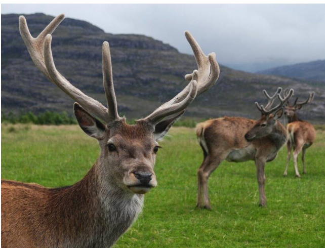
Қаратау
Марқакөл
Үстірт
Барсакелмес
Марал қанында адам ағзасына қажетті 25 түрлі микроэлемент бар. Жүрек, қанайналым, қан қысымы, буын, сүйек, иммундық жүйені жақсартуда марал мүйізінен алынатын қанның пайдасы өте зор. Мүйізді қайнатып, сорпасына түссе, денедегі суықты алып шығады. Сорпа буын сырқырағанға мың да бір ем. Марал мүйізінен денсаулыққа өте пайдалы пантокрин дәрісі дайындалады. Елімізде маралдар Шығыс Қазақстан өңірінде орналасқан қорықта мекен етеді.
Марал мүйізінен жасалатын дәрі
круцин
пантокрин
панкреатин
антибиотик
Марал қанында адам ағзасына қажетті 25 түрлі микроэлемент бар. Жүрек, қанайналым, қан қысымы, буын, сүйек, иммундық жүйені жақсартуда марал мүйізінен алынатын қанның пайдасы өте зор. Мүйізді қайнатып, сорпасына түссе, денедегі суықты алып шығады. Сорпа буын сырқырағанға мың да бір ем. Марал мүйізінен денсаулыққа өте пайдалы пантокрин дәрісі дайындалады. Елімізде маралдар Шығыс Қазақстан өңірінде орналасқан қорықта мекен етеді.
Марал дәрісі пайдалы
ас қорыту жүйесіне
жүрек - қантамыр жүйесіне
зәр шығару жүйесіне
ағзадағы бездер жұмысына
Марал қанында адам ағзасына қажетті 25 түрлі микроэлемент бар. Жүрек, қанайналым, қан қысымы, буын, сүйек, иммундық жүйені жақсартуда марал мүйізінен алынатын қанның пайдасы өте зор. Мүйізді қайнатып, сорпасына түссе, денедегі суықты алып шығады. Сорпа буын сырқырағанға мың да бір ем. Марал мүйізінен денсаулыққа өте пайдалы пантокрин дәрісі дайындалады. Елімізде маралдар Шығыс Қазақстан өңірінде орналасқан қорықта мекен етеді.
Маралдың жүрегі қанша қуысты
1 қуысты
2 қуысты
3 қуысты
4 қуысты
Марал қанында адам ағзасына қажетті 25 түрлі микроэлемент бар. Жүрек, қанайналым, қан қысымы, буын, сүйек, иммундық жүйені жақсартуда марал мүйізінен алынатын қанның пайдасы өте зор. Мүйізді қайнатып, сорпасына түссе, денедегі суықты алып шығады. Сорпа буын сырқырағанға мың да бір ем. Марал мүйізінен денсаулыққа өте пайдалы пантокрин дәрісі дайындалады. Елімізде маралдар Шығыс Қазақстан өңірінде орналасқан қорықта мекен етеді.
Маралдың бөліп шығару өнімі
аммиак
зәр қышқылы
несепнәр
триметиламиноксид
Энтодерма кабатынан дамиды
тыныс алу жүйесі
ас қорыту жүйесі
қанайналым жүйесі
жүйке жүйесі
зәр шығару жүйесі
эндокринді жүйе
жүрегі үш қуысты ағзалар
басаяқты ұлу
сиыр
балық
тауық
құрбақа
жылан
Митохондриянның сыртқы мембранасына оңай өтетін қосылыстар
су
глюкоза
липидтер
электролиттер
сахароза
калий
Шығыс Азия орталығынан шыққан өсімдіктер
тары
соя
қант қамысы
бидай
банан
жүгері
иық белдеуін құрайтын сүйектер
бұғана
тоқпан жілік
білек
жауырын
мықын
қасаға
дұрыс сәйкестендіріңіз
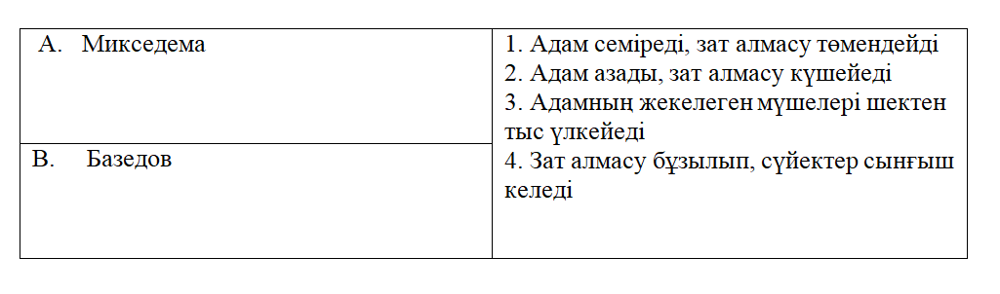
А-1; В-2.
А-2; В-4
А-1; В-3
А-3; В-1
Нәруыздардың байланысын сәйкестендірініз
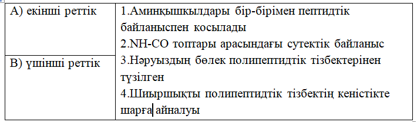
А-2; В-4
А-1; В-4
А-3; В-1
А-2; В-3
Выберите правильный вариант ответа:
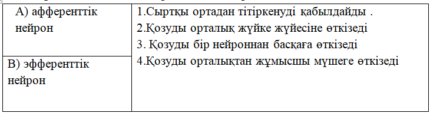
А-1; В-2
А-2; В-3
А-2; В-4
А-3; В-4
Менструальдық циклдің негізгі фазаларын сәйкестендірініз
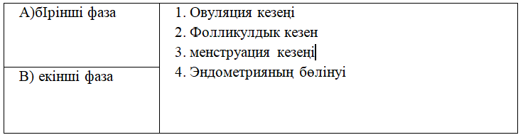
А-1; В-4
А-2; В-4
А-3; В-2
А-3; В-4
митохондрия қабаттарын сәйкестендіріңіз
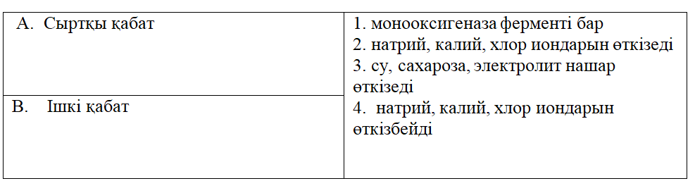
А-1; В-4
А-2; В-4
А-3; В-4
А-1; В-3
sp² гибридтену тән емес қосылыс
C(графит)
NO₃⁻
BCl₃
C₂H₆
Негіздік қасиет көрсететін оксидтер
CrO, CaO
Al₂O₃, CO₂
SO₃, CrO₃
Cr₂O₃, SO₂
Мырыш калий гидроксидінің сулы ерітіндісімен әрекеттескенде түзілетін өнімдердің бірі
ZnO
K₂ZnO₂
Zn(OH)₂
K₂[Zn(OH)₄]
Қосылыстарында ең төмен тотығу дәрежесін көрсететін элемент
күміс
скандий
темір
титан
Массасы 36,4г этанол мен сірке қышқылының қоспасын жаққанда 32,4г су түзілді. Бастапқы қоспадағы эатнолдың массалық үлесі:
60,55
49,45
39,45
50,55
Суда еріген де иондарға өте көп мөлшерде диссоциацияланатын заттар қатары
H₂S, HI
HNO₂, HI
H₂SO₄, HCl
H₂CO₃, HF
CaC₂ → C₂H₂ → C₆H₆ → X → C₆H₅COOH айналымдағы белгісіз зат
хлорбензол
метилбензол
фенол
нитробензол
Фенол азот қышқылымен әрекеттескенде түзілетін өнім
салицил қышқылы
пикрин қышқылы
1,3,5-тринитрофенол
2,4,6-тринитротолуол
Натрий тетрагидроксоалюминаты мен калий (II) гексацианоферратындағы кешентүзушінің координациялық сандары
4,6
6,2
4,2
6,8
N₂ → NH₃ → NO → HNO₃ → Cu(NO₃)₂ азот тотықтырғыш қасиет көрсететін саты
2
4
1
3
Жүйедегі қысымды төмендетіп, температураны арттырғанда тепе-теңдік оң бағытта ығысатын үдеріс
C(қ) + CO₂(г) ⟺ 2CO(г) - Q
N₂(г) + O₂(г) ⟺ 2NO(г) - Q
N₂(г) + 3H₂(г) ⟺ 2NH₃(г) + Q
C₂H₄(г) + H₂O(г) ⟺ C₂H₅OH(г) + Q
Фенолдың гидроксотопқа байланысты химиялық қасиеті
натрий гидроксидімен әрекеттесуі
бром суымен әрекеттесуі
азот қышқылымен әрекеттесуі
формальдегидпен әрекеттесуі
CO₂(г) + H₂(г) ⟺ 2CO(г) + H₂O реакция басталғаннан кейін 80 с өткенде судың молярлық концентрациясы 0,36 моль/л, ал 1 мин 45 секунд өткеннен кейін 0,48 моль/л болды. Реакцияның жылдамдығы
4,3*10⁻³ моль/л*сек
4,8*10⁻³ моль/л*сек
4,8*10⁻⁴ моль/л*сек
4,3*10⁻⁴ моль/л*сек
Белгісіз қаныққан көмірсутекті жаққанда 61,6 г CO₂ және 31,5 г H₂O түзілді. Алканның молекулалық формуласы
C₄H₁₀
C₃H₈
CH₄
C₇H₁₆
Массасы 80 г суды (Cменшікті = 4,200 кДж/кг) 100°C-тан 40°C-ге дейін салқындатқанда бөлініп шығатын жылу мөлшері (кДж)
15,12
20,16
10,08
30,24
Массасы 40 г магний мен магний нитратын ауада қақтағанда оның массасы өзгермеген. Қоспа құрамындағы магний нитратының массалық үлесі (%)
57,7
47,7
37,7
67,7
K₂CO₃ және Na₂S тұздары тұз қышқылымен толық әрекеттескенде түзілген газдың көлемі (қ.ж.) 17,92 дм³ және хлоридтер массасы 104,8 г. Қоспадағы натрий сульфидінің массалық үлесі
42 %
58 %
48 %
52 %
400 л (қ.ж.) метан мен этилен қоспасының құрамында 35 % этилен бар, алынған полиэтиленнің массасы
185 г
165 г
195 г
175 г
BX₃ молекуласының байланысындағы гибридтену түрі:
sp²d
sp²
sp³d
sp³
Молекулалық кристалл торлы қосылысқа жатпайды
HCl, Cl₂
H₂O, CO₂
CO, SO₂
B, SiO₂
Ацетиленді гидрлегенде 54 г этан алынды. Этан шығымы 40 % болса, ацетиленнің массасын табыңдар
115 г
112 г
119 г
117 г
Ерігіші ортасы pH=7 болатын тұз:
BaS
BaCO₃
BaSO₄
BaCl₂
Мыс (II) сульфатының 500 г ерітіндісін сулытып қақтағанда 75 г қатты қалдық қалды. Бастапқы тұздың массалық үлесін есептеңдер
15 %
45 %
25 %
35 %
Массасы 7г мырыш тақташасын 50г мыс (ІІ) сульфаты ерітіндісіне батырғанда тақташаның массасы 6.8г болды,соңғы ерітіндінің массасы:
50.0г
49.8г
50,2
48,3
Реакция теңдеуіндегі оң бөлігіндегі стехиометриялық коэффиценттерінің қосын-
дысын көрсетіңіз:
KMnO4 +16HCl →Cl2↑ + KCl +MnCl2 + H2O
18
17
8
9
B заты күміс нитратымен әрекеттескенде түзілген тұнбаның түсі
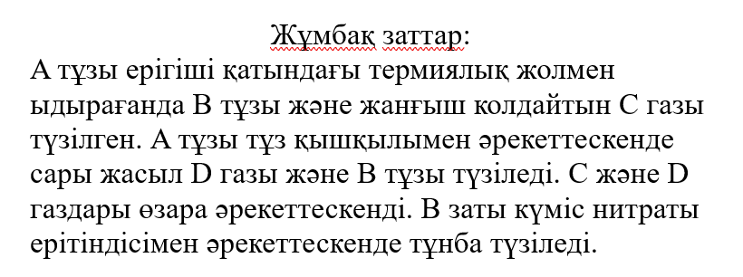
сары
қара
көк
ақ
D заттың тән физикалық қасиеттер
тұншықтырғыш, улы газ
қоңыр түсті, оңай буланады
сары түсті сұйық
қара сұр түсті, оңай сублимацияланады
Өнеркәсіпте D газын алу үшін қолданылатын заттар
NaCl(aq) + H₂O → электролиз
HCl + KClO₃ →
Zn + HCl →
MnO₂ + HCl →
Көлемі 2,24 л D заты (қ.ж.) 24,9 г калий йодиді бар ерітіндімен әрекеттескенде түзілген йодтың массасы (г)
19,05
25,40
9,52
12,70
Марганец диоксидімен 30 %-дық (тығыздығы -1,15 г/мл) 169,28 мл тұз қышқылы әрекеттескенде бөлінген D заттың көлемі (қ.ж.)
2,24 л
6,72 л
8,96 л
4,48 л
A→ ацетилен→бензол→B→бензой қышқылы айналымындағы белгісіздерді қосылыстарымен сәйкестендіріңіз
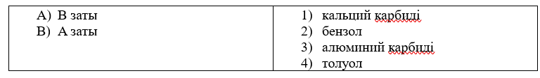
А-1, В-2
А-2, В-4
А-4, В-1
А-3, В-2
Нитраттардың айырылу өнімдерін реагенттермен сәйкестендіріңіз
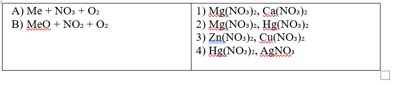
А-1, В-2
А-2, В-4
А-4, В-3
А-3, В-2
Алкиндерді құрамындағы гибридтенуге қатысқан p-электрондар санымен сәйкестендіріңіз
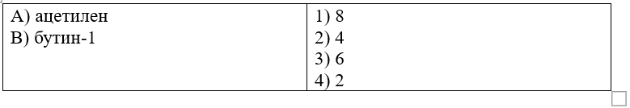
А-1, В-2
А-2, В-4
А-4, В-1
А-3, В-2
Заттар әрекеттесу мөлшерлерінің қатынастарын түзілетін өніммен сәйкестендіріңіз
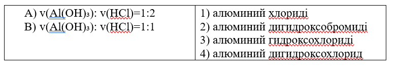
А-1, В-2
А-3, В-4
А-4, В-1
А-3, В-2
Альдегид және кетондарды сутекпен тотықсыздану өнімдерімен сәйкестендіріңіз
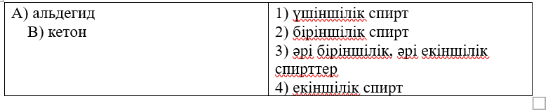
А-1, В-2
А-2, В-4
А-4, В-1
А-3, В-2
Бромға тән қасиет(тер)
оңай буланатын сұйықтық
сары жасыл түсті
буы күшті у
тұншықтырғыш иісті улы газ
қоңыр түсті
оңай сублимацияланады
HCl → x₁ → Cl₂ → KClO₃ → KCl → AgCl тізбегіндегі x₁-x₅ реактивтер және жағдайлар қатары.
KMnO₄, KOH(сұйық), HCl
KMnO₄, KOH(сұйық), KCl
I₂, KOH(қатты), t°
MnO₂, KOH(ыстық), t°
MnO₂, KOH(қатты), t°
KMnO₄, KOH(қатты), KCl
Электролиз кезінде суды ерітілген тек металл ғана тотықсыздайтын тұз(дар)
AlCl₃
Hg(NO₃)₂
ZnCl₂
Ni(NO₃)₂
NaNO₃
AgNO₃
nA → [-CH₂-CH(CH₃)-]n реакция түрі, түзілген өнім аты және A заты
этилен
пропилен
поликонденсациялану
полимерлену
полиэтилен
полипропилен
Хром калий хлоратының ерітіндісінің бөлікшісімен әрекеттескенде 29,1 г калий хроматы түзілген (шығымы 60%). Сілтінің зат мөлшері және хромның массасы
0,13 моль
13 г
24 г
6,5 г
0,25 моль
0,5 моль